Repair damaged videos and preview results first.
Fix videos that will not open, freeze during playback, stutter, lose sync, or become unreadable after transfer errors, crashes, or storage corruption.
Cannot play or open
Position the product as a solution for files that refuse to open after copy failure, crash, or incomplete transfer.
Stuck, jerky, or frozen
Explain that the repair engine can rebuild playback continuity where frames or stream structure have been damaged.
No image, no sound, or out-of-sync
Use plain user-facing language that maps to real-world symptoms rather than only codec terminology.
Why this flow fits your product

Suggested formats to display
MP4, MOV, AVI, MKV, M4V, WMV, 3GP, and other formats as your engine supports them.
Suggested source devices
Cameras, drones, phones, dash cams, SD cards, USB drives, HDDs, and desktop storage.
Everything users need for a clear repair decision
AmazeMend explains the damage, repairs the file, and lets users inspect the preview before unlocking full export.
Quick repair mode
Perfect for common damage cases where users want a straightforward experience without extra complexity.
Preview before export
Show that users can confirm the quality before purchasing a license to save the full repaired file.
Batch repair ready
Prepare UI copy and layout that can later match your actual support for multiple files at once.
Local desktop workflow
A privacy-friendly message that reassures users they are not forced to upload large private files to the cloud.
License-gated export
Support your commercial model with a clear explanation of what free preview includes and what paid export unlocks.
Future AI / enhancement room
If you later add enhancement or restoration layers, the layout already has space for an upsell section.

Use visual proof without overcomplicating the page
Use the preview to compare broken playback with the repaired result before you decide to export the complete video.
- Pair with real preview examples later.
- Show one “before” frame and one “after” playback or thumbnail.
- Keep it focused on recovery value, not just aesthetics.
Designed for confidence before checkout
AmazeMend keeps the purchase decision tied to visible repair results, not promises alone.
FAQ
FAQ content helps SEO, reduces support volume, and reinforces your trial-to-purchase logic.